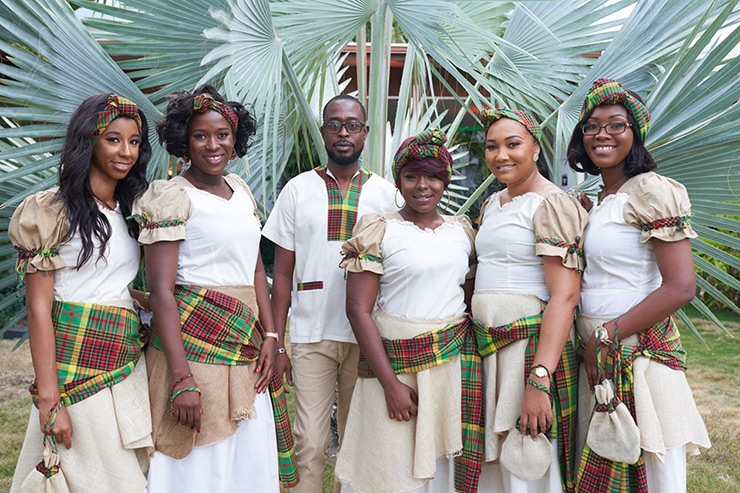
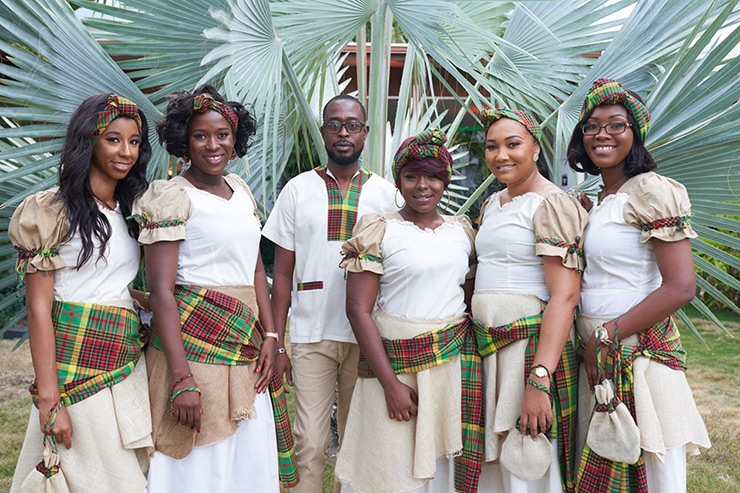
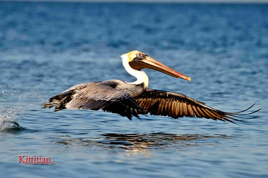
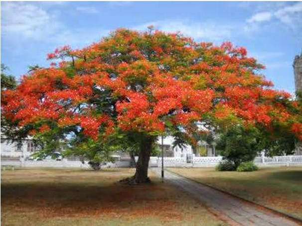
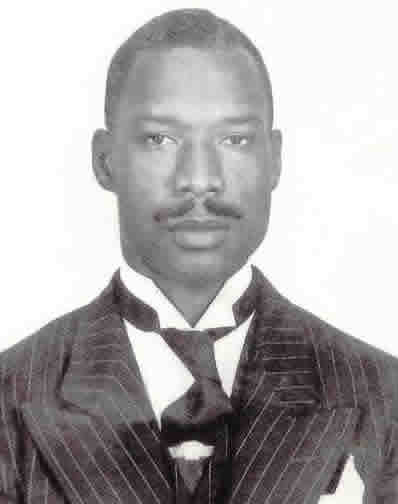
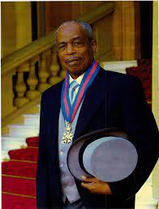

| National Symbol | Description | Image |
|---|---|---|
| National flag | The national flag of St. Kitts and Nevis features green for our fertile lands, yellow for our year- round sunshine, black for our African heritage, red from our struggle from slavery through colonalism to independence. It also displays two white stars on a black diagonal symbols of hope and liberty. | |
| National wear | The basis of this costume has originated from traditional enslaved Africans' clothing on the plantations as well as influences from West African cultures. The costume has elements of European dress (laced back bodice, puffed sleeves, long full skirts) as well as elements of West African dress (head wrap, V neck split sided short sleeved shirt). These costumes also include details that have changed and developed for practical purposes i.e. the lap skirt; which was for the purpose of protecting the dress from dirt, and the soda wrap which was for carrying cane soda used to fertilise the sugar cane fields. |  

|
| National dish | The combination of fresh veggies and freshly caught fish that these islands provide lead to the creation of this nation's signature dish of Stewed Salt Fish with Dumplings, Spicy Plantains, and Breadfruit. | |
| National bird | The national bird is the brown pelican, Pelecanus Occidentalis. In its youth, it is brown on the head, neck and upper parts of the body, and mostly white below. As it matures, the majority of the body becomes dark brown while the upper part of the head turns white. During the post-nuptial molt the adult’s neck turns white. The neck and head are not extended during flight. Brown pelicans are sometimes solitary feeders but may also be found in small flocks as they feed on schools fish near the surface of the sea. They nest in colonies along the coast in low trees and in bushes. |  |
| National flower | The national flower is the Poinciana or flamboyant, Named after Monsieur de Poincy, the first French Governor of St. Kitts, who is said to have introduced it to the region. It is said to have originated is Madagascar and is one of the most striking trees of the Tropics, with its umbrella-shaped crown and Compound deciduous leaves, and red and yellow scalloped flowers followed by long, black seedpods. It blooms from May to August. |  |
Lyrics
I
O Land of Beauty!
Our country where peace abounds,
Thy children stand free
On the strength of will and love.
With God in all our struggles,
Saint Kitts and Nevis be,
A nation bound together,
With a common destiny.
II
As stalwarts we stand,
For justice and liberty.
With wisdom and truth,
We will serve and honour thee.
No sword nor spear can conquer,
For God will sure defend.
His blessings shall forever,
To posterity extend.[5][6]
Listen!
The Right Excellent Sir Robert Llewellyn Bradshaw

The first Premier of Saint Kitts and Nevis.
Credited with leading Saint Kitts and Nevis to independence. He was the first national
hero, and the Golden Rock Airport in Saint Kitts was renamed the Robert L. Bradshaw
International Airport in his honour.
The Right Excellent Sir Paul Southwell
The second Premier of Saint Kitts and Nevis.
Known for pioneering economic diversification in St.Kitts and Nevis. The industrial
site is named in his honour and is called the C.A. Paul Southwell Industrial Park.
The Right Excellent Joseph Nathaniel
Former Minister of the National Assembly
Comrade France has successfully contested nine General Elections- 1946, 1952, 1957,
1961, 1966, 1971, 1975, 1980, 1984 – as a representative of the people of St.Kitts
The general hospital in St.Kitts was named in his honor.
The Right Excellent Simeon Daniel
Former Premier of Nevis
Established the Bank of Nevis Ltd. in 1985 and founded Daniel,
Brantley & Associates, a law firm that represents many throughout the region and
internationally. The Centre for the Performing Arts in Nevis was named in Sir Simeon's
honour.
The Right Excellent Kennedy Alphonse Simmonds

Premier of St. Kitts and Nevis
Served as primier from 21 February 1980, until the twin-island state gained
independence from the United Kingdom on 19 September 1983, after which he became the
first Prime minister.